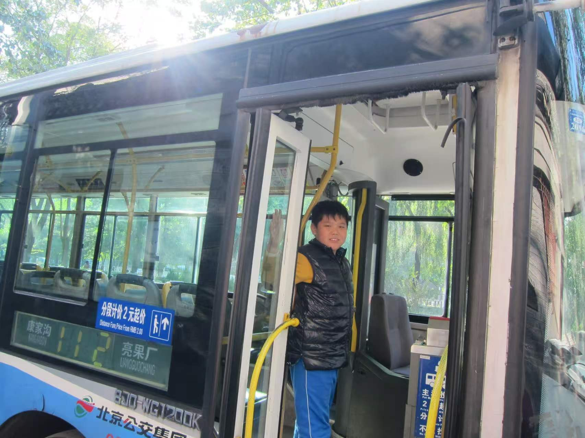

My Background
My name is Haochen Zhang. I'm 20 years old now and I was born and raised in Beijing, China.
I'm currently a Senior Student at New York University. I'm majoring in Urban Planning/Architecture and minoring in Transportation Engineering, Mathematics, and Web Development/Programming.
My interests
My interests include travel, photography, and explore different transit systems, etc.
Additionally, I love to take photos of buses and trains. Here is a website of my portfolio. BUSPHOTO"
Images
Photo Credit: Haochen Zhang

Photo Credit: Haochen Zhang